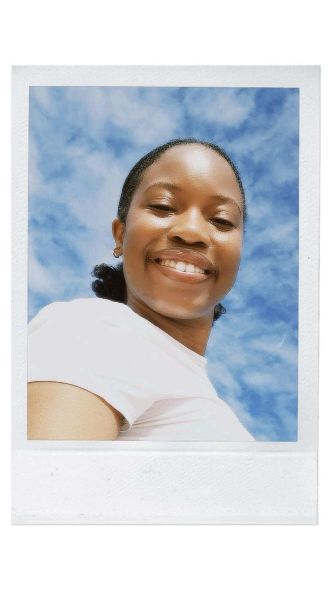
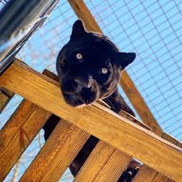
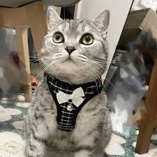
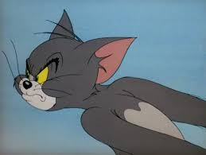

Visit Jeffrey's bay,
where love and peace meets the sun and sea
Home
Culture
History
Landscape
Municipality
Share your experience
About us
Sign In
Hazel

Our on the ground expert. Hazel handles photography, interviewing locals and capturing the essence of Jeffrey's Bay.
Kopano

The resident event expert. Kopano knows where the movers groove and where the shakers stake their claim
Tumi

Tumi loves geology, whether its licking rocks or throwing them at your head because you said she licks rocks. Any questions about the natural landscape of Jeffery's bay she can answer
Thomas

diversity hire